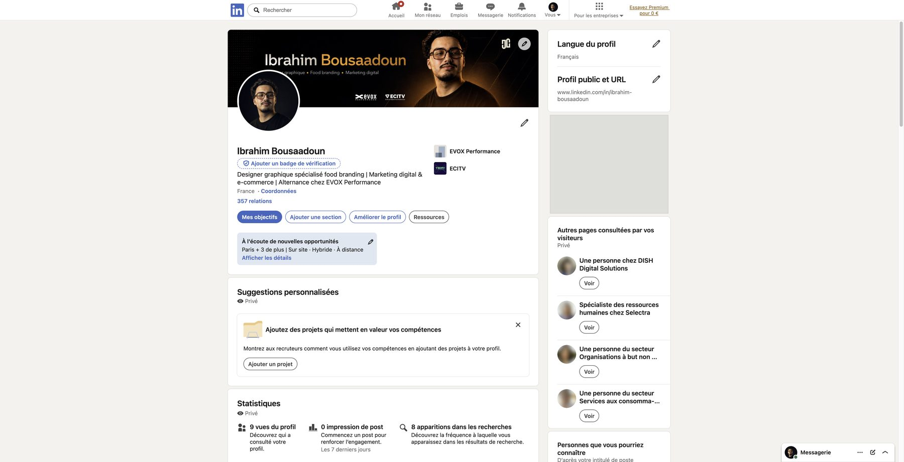
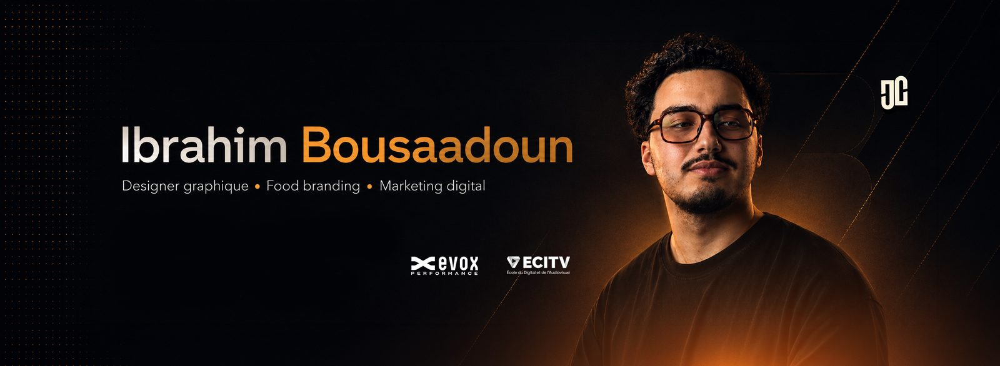
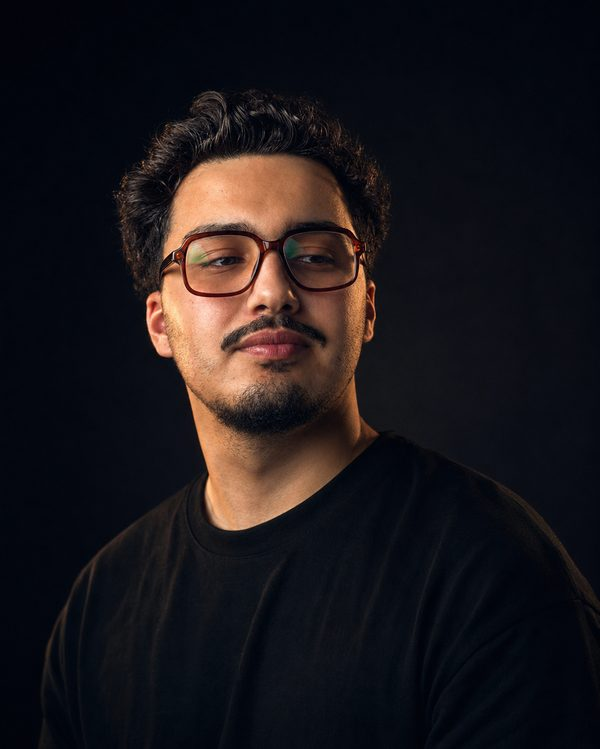
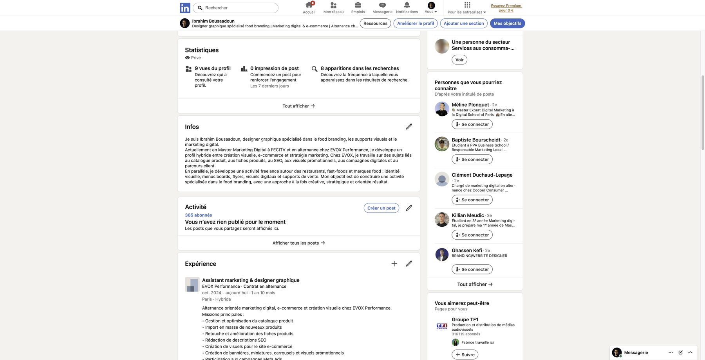
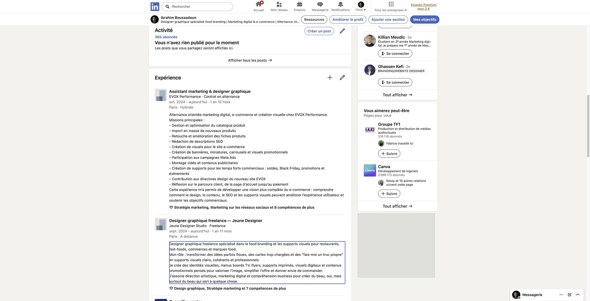
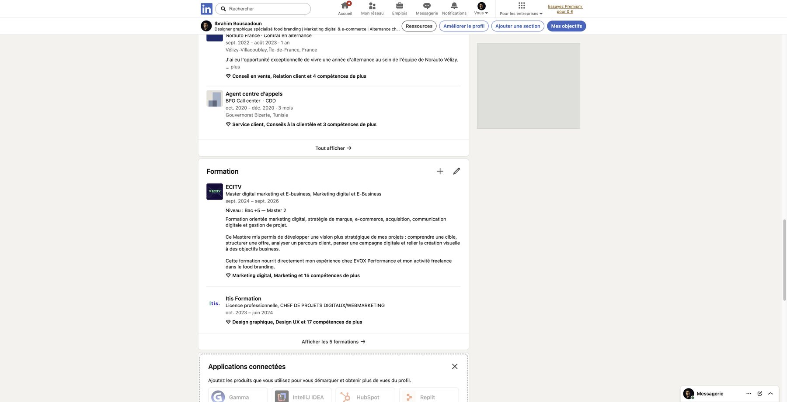
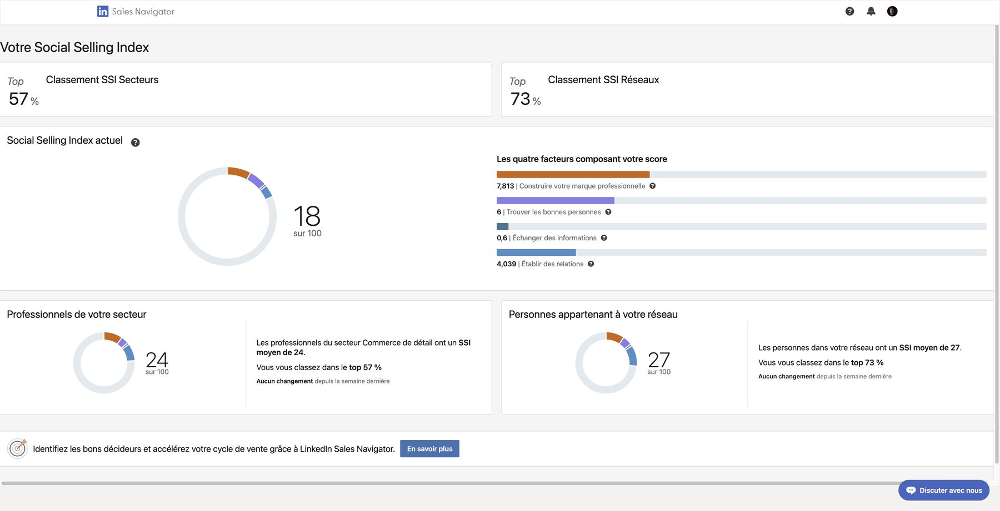

✕
Un profil retravaillé pour aligner mon parcours, mon positionnement et mon projet professionnel.


Bannière
Photo de profil
Infos / À propos
Expériences EVOX & freelance
Formation ECITVLe Social Selling Index a été consulté dans le cadre de ce livrable LinkedIn : un indicateur LinkedIn qui mesure la qualité de la marque professionnelle, la mise en relation avec les bonnes personnes, l'engagement avec du contenu pertinent et la qualité du réseau construit.

Cette optimisation LinkedIn s'inscrit dans une démarche de personal branding : rendre mon parcours plus lisible, valoriser mes expériences et aligner mon profil avec mon projet professionnel autour du design graphique, du food branding, du marketing digital et de l'e-commerce.